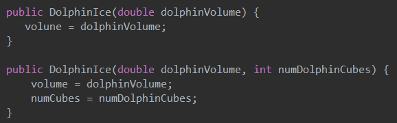
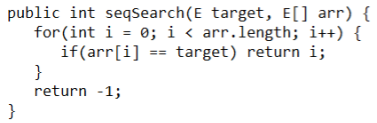

Table of Contents
Unit 1 - OOP
Objects and Classes
A software object is a location in memory that corresponds to a value. Similarly to a real object with attributes and behaviors, software objects can have instance variables (attributes) and methods (behaviors). For example, a plane object can have attributes such as size, capacity, and brand. It can have behaviors such as liftOff, setDown, and cruise. These can also be the instane variables and methods of a software plane object.
A Java class is a blueprint for an object. Java comes with library classes such as Java.lang.math, but classes can also be created by the user.
Running the Java application creates objects of classes and allows for use of the methods within the objects. For example, one dolphin ice mold class could be used as the template to create many dolphin ice cube objects.
A static characteristic in a class is a variable that is shared across all objects of the class; there is only 1 copy of it. This is useful when the variable is a common property, for example the maximum class size in a university. Static methods can be executed without creating an object of the class, as it is part of the class definition itself.
Following the dolphin ice cubes example, the following shows examples of instance variables and getter / setter methods used by the class:
Note that variables and methods of an object can be accessed using dot notation, writing the name of the reference variable, a period, and then the name of the variable or method you are accessing.

Creating Objects
The basic method called whenever an object of a class created is its constructor. Constructors have the same name as the class and are usually used to initialize instance variables with its given parameters. If no constructors are declared in a class, Java will use the default constructor with no parameters when an object of the class is created. A class can have overloaded constructors– constructors with different parameters. For example, the following methods can be constructors for a DolphinIce class:
To declare an object, write the class name and the reference variable name, just like with declaring String variables. To initialize the object, you must use the "new" keyword and call the constructor of the class. For example, the following code creates 2 objects of the DolphinIce class:

Inheritance and Polymorphism
Inheritance is a way for classes to extend other classes, to be subclasses of a superclass. For example, the following diagram shows an inheritance tree:

The arrows represents an IS-A(n) relationship of inheritance; strings is a subclass of instruments and violin is a subclass of strings.
A Has-A relationship denotes the relationship when an instance of one class is used in another class. For example, if an instance of the class Fingerboard is used in Violin, the Violin Has-A fingerboard.
Note that a subclass can only extend one superclass, but a superclass can have as many subclasses as necessary. When a class extends a superclass, it inherits all public methods from the superclass (not private methods). For example, if the Strings class has a public method called TakeOutOfCase(), that will be inherited and usable by the Violin subclass.
Rules
For a superclass constructor to be used in the constructor of a subclass, call super() in the first line of the constructor. Any of the superclass constructors can be called this way. If no constructors are called in the first line, the default constructor with no parameters is automatically called. To avoid errors, define the no argument constructor in the superclass.
Instance variables (attributes) should be declared as private so that they are not directly accessible by subclasses. For a subclass to access the instance variables, use setter and getter methods. Note that a subclass can have its own instance variables that are inaccessible by the superclass.
Polymorphism
When a parent and child class have the same method (name and parameters), one of these methods will be overridden to run the other. This ability of the method executed to change depending on the object type is called polymorphism; the ability to take many forms. Note that this is different from method overloading, as if the methods have the same name but different parameters they will be differentiated and no overriding takes place.
By default, methods from subclasses override methods from the parent class. To call a method in the parent class that would be overridden, use the super keyword. For example, if the Violin and Strings classes both have the method public void playScales(), to override the method from the subclass Violin use:
super.playScales();
Another example of polymorphism is assigning an Object of a subclass to a superclass reference variable. To demonstrate this, see that the following code would be valid:
Strings s = new Violin();
This is because Violin is a subclass of Strings and thereby a Violin IS-A String instrument. Note that only methods that are defined in the superclass can be accessed via reference variable s (if Violin has the same method, it will still automatically override the one in Strings). To access methods in the Violin class but not the Strings class, downcast s into a Violin:
((Violin s).reString();
In contrast, the code below would not be valid. This is because a String instrument Is NOT A Violin:
Violin v = new Strings();
Abstract classes and Interfaces
An Abstract class is a class where at least one method is abstract. This means the method has its name, return type, public/ private, and parameters defined but no implementation. Abstract classes consist of abstract and non-abstract methods and can be used as templates for other classes.
You cannot create an object of an abstract class. An abstract class can, however, have constructors to be called from subclasses. For example, the following is an abstract class template for a 2D shape:

Note that you can have non abstract, implemented methods in an abstract class. These provide utility for shared use betweens subclasses.
Interfaces are similar to abstract classes, except all its methods must be abstract and it cannot have attributes. An interface can also not have constructors. Because all of the methods in an interface are public and abstract, only the return type, method name, and parameters must be specified.
Instead of extending interfaces, a class can implement an interface. A concrete (non-abstract) class that implements an interface must implement all the methods in the interface. Unlike extending an abstract class, a class can implement multiple interfaces. Each interface implemented provides a secondary data type to objects of that class. Thus, you can assign an object of a subclass to a reference variable of an interface. For example, the following code defines an interface "Music":

As polymorphism applies to interfaces, this statement is valid between "Music" and a class "Classical" that implements "Music":
Music m = new Classical();
Project Application
Analysis
Inheritance allows the use of a general class to define more specific classes. As these subclasses inherit the properties of the general class, well designed superclasses can reduce the repetitiveness and increase the organization of the code.
Abstract classes are useful when there are many shared methods between related classes. Interfaces are useful when their is a shared behavior between amny unrelated classes, or it would be useful for multiple interfaces to be used.
Common Mistakes
Potential mistakes related to accessibility are declaring instance variables as public, attempting and access private instance variables / methods.
Mistakes that can be made in inheritance include assigning a parent object to a child reference variable, calling super() not in the first line of a subclass constructor, trying to extend multiple superclasses, and forgetting that subclass methods will override superclass methods without the super keyword.
Mistakes related to abstract classes and interfaces can be trying to instantiate an object of an abstract class or interface, implementing an abstract method, creating instance variables in an interface, having concrete methods in an interface, and writing a constructor in an interface.
Unit 2 - Arrays
Introduction to Arrays
Arrays are consecutive blocks of memory that store the same type of data. For example, a int array of size 10 holds up to 10 integers. The value(s) in one location in memory within the array is called an element. The position of the element within the array is called the index with the first element being 0. Unlike Strings, the length of an array is not a callable method. Instead, it is a public field in the array object that can be read with array.length. Again, unlike Strings, the length of an array cannot be changed after initialization.
Analysis
Arrays are useful when storing a plural number of related values. Each value no longer requires a unique variable, but they can be refered to by their index in the one array. This saves space in the code, increases readability, and increases ease of using and manipulating the values within the array. In an array, if you wanted to apply an operation on every 1st, 2nd, 3rd, etc element, you could iterate through the array applying that operation rather than needing to write a line of code for every element being used if they were separate variables. Finally, for ordered arrays, having elements available by index allows for easier access to the desired data and sorting elements.
Coding with Arrays
You can initialize an array 'Arr' of data type 'Type' and size 'size' with the statement:
Type[] arr = new Type[size];
You can also initialize the array in the same line by stating the contents inside curly braces and separated by commas. Note that if you choose to initialize an array this way, the number of values within the curly braces is the length of the array. No more values can be added; they can only change elements currently in the array. For example, if you want to create an array of integers from 1 to 5, you could declare and initialize it in the same line and the size of the array is automatically set to 5:
int[] arr = {1, 2, 3, 4, 5};
It is also possible to declare an array without initializing it. For example, declaring an string arr with the code below:
String[] lines;
Note that if you initialize the array without giving the elements in curly braces, all elements are initialized to a default value. This is 0 for numbers, false for booleans, and null for objects. If the array type is an object, the array holds references to objects which cannot be used until they are initialized.
An index is referred to in square brackets after the array name. The element at index n in array 'arr' can be accessed by writing arr[n] . The index can be any int variable within the length of the array. This means arr[n-2] and arr[(int)(Math.random()*10)+1] are both valid assuming they are not out of bounds.
Arrays and Methods
Arrays can be passed to methods similarly to variables of ints, doubles, etc. However, when passing an array to a method you are passing a reference to its location in memory rather than a copy of its values. This means the elements of the array can be changed within the method, unlike with primitive data types.
Methods can also have an array as their return type. Like passing arrays to methods, returning an array returns a reference to its location in memory.
2D Arrays
A 2 dimensional array is an array in which each element is a 1D array. It has two indices, one for rows and one for columns. Each row is a different section of consecutive locations in memory. They are commonly used to represent tables, the coordinate plan, tiled game boards such as in chess, and more. You can write 2D arrays similarly to writing a one dimensional one– just with two square brackets for each dimension:
int[][] chessboard = new int[64][64];
To initialize a 2D array with the values inside, separate the elements in different rows into different sets of curly braces and envelop all the rows between 2 curly braces. For example, the code below initializes a grid of tic-tac-toe where X wins:
char[][] tictactoe = {{O, X, O}, {X, X, O}, {O, X, X}};
The length of a 2D array 'arr' (the number of arrays / rows it contains) is arr.length. The length of the nth row, aka the number of columns in that row, in a 2D array is arr[n].length. Note that the length of each row does not have to be constant. An array in which different rows have different lengths is a "ragged" array. You can do this by initializing each row separately or by using curly braces method to initialize the array. For example, the code below initializes a ragged array composed of the heights of flowers in each row of a garden:
double[][] garden = {{1.0, 1.5, 2.0}, {0.5, 1.0}, {1.0, 2.5, 3.0, 1.5}};
Project application
balhlbahblah
Common mistakes
If trying to access an element whose index is negative or greater than 'length of the array - 1', Java interpreter will throw the ArrayIndexOutOfBoundsException at run time. This may occur when iterating through an array without being careful of the index bounds. Another common mistake is attempting to access an object element that has not been initialized. Doing this will result in a NullPointerException, as the value being accessed is null. Some people may also forget that array indexes start at 0 and not 1. This means the first element is index 0, the second is index 1, and so on until the nth element is index n-1. Finally, it's important to remember that the length of an array is an attribute that is read with array.length and not the array.length() used for Strings.
Unit 3 - ArraysLists
Introduction and using ArrayLists
ArrayLists are Objects that can be important using the java.util package. They are similar to arrays, with a key difference being their sizes are dynamic. This means elements can be added or removed from arraylists as necessary. Arraylists, similarly to arrays, store only one datatype. This is written in angled brackets in the declaration.
Additionally, they can only hold objects– not primitive data types. If using primitive data types like ints and doubles, either use a regular array or convert them into Integer or Double which are objects. Conversion from the primitive data type to an object is automatic for elements being inserted into the arraylist and this is known as autoboxing. The code to declare an arraylist of type 'E' and name 'arr' is:
ArrayList arr = new ArrayList();
The capacity of the array is the length of the array internally storing the values inside the arraylist. By default this is 10, but it can also be set during the creation of an arraylist by stating the capacity between the parenthesis:
ArrayList arr = new ArrayList (int capacity);
After initializing the array, common arraylist methods that can be used on 'arr' include:

Note that arraylists have a default toString() method that prints the contents of the arraylist. Additionally, when the capacity has run out of space it is automatically doubled by allocating a larger array and copying the values.
Analysis
ArrayLists have the advantage over arrays in any scenario where you have a fluctuating number of elements. Having a dynamic size allows for greater flexibility and is useful in, for example, storing a shelf of books at a library where books are borrowed and returned.
Arraylists also offer convenience in the form of built-in higher level operations such as searching, removing, and adding elements. As part of the Java Collections Framework, arraylists have access to a wide variety of methods that increase their functionality (e.g, .contains). These factors make arraylists good for ease of use.
On the other hand, arraylists are usually a less efficient option than arrays, especially for giving direct access to an element. This is because arrays have a fixed size and allow for direct memory allocation, whereas arraylists require checking size, resizing, and datacopying when the capacity is reached. Arraylists can also only be single dimensional. For any grid, table, or other multi dimensional data set, arraylists cannot be used.
Project Application
description stuff
Common Mistakes
It's important to remember to import java.util.* in a class that uses arraylists, otherwise they cannot be used.
The IndexOutOfBoundsException will be thrown if you try to access or add an element at an index that is either negative or larger than the last index of the arraylist.
Note that removing an element x from an arraylist reduces the size of the array and causes all elements to the right of x to shift left. This means regular implementation of a for loop to remove elements from an arraylist will not work; if multiple consecutive elements need to be removed, only every other will be removed as the next element will take the index of the element that was just removed and go unnoticed. As the size after the removals is less than the size of the array in at the start, the for loop will also go out of bounds.
Unit 4 - Search and Sort
Searching Basics
Searching is the act of going through a set of data to find a specific one. The most basic form of searching is the sequential search. This iterates through the list, comparing each value to the target value. For example, the method below takes an array and target value of object type E and performs sequential search:
The average number of comparisons needed if the target value is in the array, is half of the array length. With an array of length n, n comparisons would be needed to show the value is not in the array. This means that sequential search is in O(n); the time complexity of the algorithm increases linearly with the size of the input data.
A more efficient algorithm is the binary search. This search assumes a sorted array n and requires active tracking of the max and min of the current range. This range starts with the whole array with max being the last index and min being index 0. Every iteration, the middle element of the search range ((max+min)/2) is compared to the target element. If the target value is greater, the minimum is set to the index one greater than the current middle, the middle is recalculated, and it tries again. If the target value is less, the maximum is set to the index one less than the current middle, the middle is recalculated, and it tries again. This continues until the target equals the middle value. Binary search is an O(log n) algorithm. This means that run time does not significantly increase with large increases in input. This makes sense logically; with each iteration, half of the current search range is removed from consideration.
Sorting Basics
The act of sorting is rearranging the data in a list by some criteria (e.g, numerically ascending, alphabetically, numerically descending, etc).
Selection sort
One of the most basic sorting algorithms is selection sort. This checks for the maximum value among the first n elements, where n starts as the length of the array - 1. It then swaps this largest value with the nth element; the largest element is moved to the end of the array. It continues this, decrementing n by 1 every time, until the array has been sorted. Selection sort has the same, worst possible number of comparisons for arrays of the same length n; n(n+1)/2. It is an O(n2) algorithm.
Insertion sort
Another basic sorting algorithm is the insertion sort. Insertion sort, opposite to sequential sort, starts at the first element and expands to the full array. In each iteration i, it takes the (i+1)th element and sorts it into the correct location in the current range. The range then expands and this continues until the range covers the entire array. Insertion sort is an O(n2) algorithm as well.
Other sorting algorithms
More advanced, efficient sorting algorithms that run in O(nlogn) time include:
Quick sort - randomly selecting a pivot point around which to sort the array, larger values to the right and smaller values to the left. Uses quicksort to recursively sort the sub arrays to the left and right of the pivot point.
Merge sort - Continuously splits the array in half until it is made of arrays of length 1, then combines the subarrays in sorted order until the full array is rebuilt.
Analysis
Searching and sorting is extremely useful in many scenarios. For example, sorting search results by relevance, sorting social media posts by most likes, sorting purchases by date, and more.
Usually, sorting and searching algorithms are chosen for the most space and time efficient; O(n) or O(nlogn). For example, quick sort is a O(n logn) algorithm that performs best when the randomly selected pivot points split the array roughly equally in half. With a data set with 200 thousand values, quick sort would take an average of 0.05 seconds to complete sorting. In contrast, a O(n2) algorithm like insertion sort would take an average of 69.12 seconds.
Project Application
Common Mistakes
One mistake that may be made when writing a sorting algorithm is using comparison operators for numerical values (e.g, less than, greater than) when trying to sort other data types (e.g, Objects). It is important to clearly code the comparison criteria to obtain a correctly sorted list of values.
Another potential mistake is to not use array space correctly when sorting, and write over the values in the array. Sorting algorithms commonly shift and rewrite values within the array. If not coded correctly, you may end up duplicating a value in the array and losing another.
When sorting, it can be useful to know whether the algorithm is stable or not. If an algorithm is stable, it retains the original order of equal value elements after they have been sorted. If it is unstable, the order of equal value elements may be changed after sorting.
Finally, when working with large data sets you should keep in mind the time and space complexities of the algorithms you are using. Large data sets with inefficient algorithms may lead to a slow program.
Unit 5 - Recursion
Recursion basics
Recursion is when a method repeatedly invokes itself, passing different parameters until it reaches a base case and returns a value. Recursion helps solve problems by splitting it into simpler versions of the original problem. Recursion must have a base case and a recursive case. A base case does not call the method again and instead returns a value. A recursive case calls the method, changing the parameters so that its method call solves a simpler problem. Recursive calls must become more and more simple until they reach the base case. When the base case is reached, a definitive value can be given to the previous step of the recursion which gives a definitive value for the one before and so on until a returnable value that is the sum of the recursive calls is returned.
For example, the following images compare taking the sum of all the digits in a given integer N in a recursive method and an iterative method:


In the recursive method, the base case is when N is only one digit; it returns N. The recursive case is when there is more than 1 digit. It returns the sum of the units digit of the current number and a recursive call to the remainder of the number, without the units digit. The iterative method sets the integer to be a string and iterates through each character in the string, adding that digit to the sum each time.
Project Application
Analysis
Recursion can be helpful to reduce the amount of code needed for a repeated function. Recursion can also help simplify the code and can better represent some concepts than iteration. For example, the following images compare a method that takes the power of a base recursively v.s iteratively:


The code to exponentiate recursively does not require any extra variables and is fairly intuitive to understand. Recursion usually has smaller code size than iteration.
On the other hand, for larger sets of data that require more recursive calls, the time complexity of recursion will be higher than that of iteration. Having to maintain and update the stack (stores data from recursive calls) causes slower execution speed and more overhead than iteration. As iteration does not call itself, it doesn't need a stack and has no overhead. An infinite loop in recursion As recursion and iteration are used in similar problems. In most cases, the solution to use is up to the programmer. A few more complex problems, however, can be solved with recursion but not iteration. Notably, traversing trees and graphs commonly use recursion. For example, searching through files that are stored in a tree of directories or a family tree.
Common mistakes
Be careful not to create an infinite recursive loop. If the base case takes too long to or is never reached, the "stack" that stores the data of the recursive calls will run out of space and a stack overflow occurs. This can be avoided by having a base case that will always be reached and in which the method / function returns a value.
Another potential mistake is incorrectly ordering the returned values. For example, below are two implemementations of a method that is supposed to recursively reverse a string:


The method on the left correctly returns a reversed string, as in each call the first character in the string is added to the back of the remaining characters. The method on the right, however, returns the same string that was initially passed to it. This is because the character at the front of the string is added back to the front rather than after the remainder of the string.